1 / 12
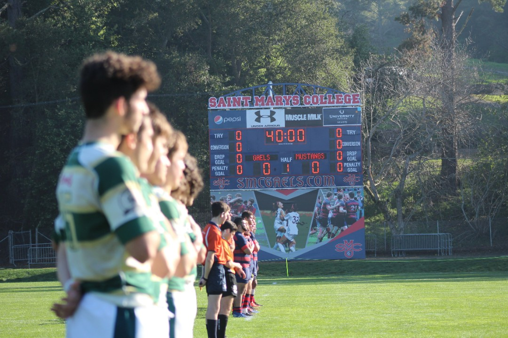
After losing their first two matches to open the regular season, the Mustangs travelled to Moraga, Calif. to take on No. 4 Saint Mary’s Saturday, Feb. 1, 2020. The Gaels — a team that consistently finds themselves among the nation’s elite — were a heavy favorite over the visiting Mustangs.
2 / 12
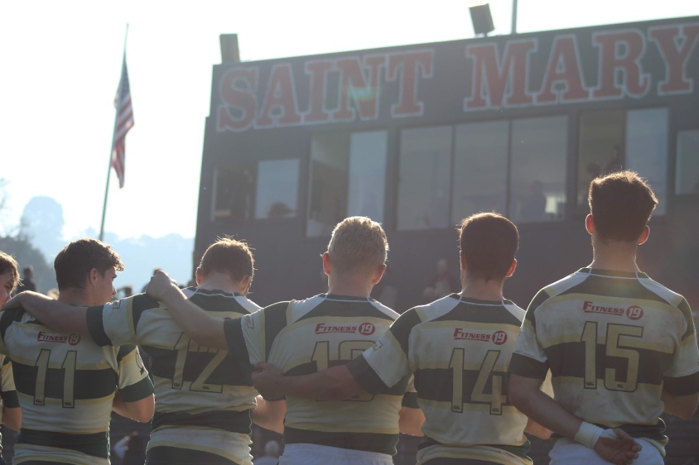
(Left to right) Sophomore wing Mitchell Berger, sophomore center Finn Burke, junior center Ryan Dowgiewicz, senior wing Marshall Brusca, and freshman fullback Alex Dominé embrace as the national anthem is played prior to their Feb. 1 match against No. 4 St. Mary’s in Moraga, Calif. The Saint Mary’s lettering looms overhead as sunlight casts bright halos on the Mustangs players; an ominous pre-game warning of the impending uphill battle moments away against a team that was one win away from a national championship appearance a year ago.
3 / 12
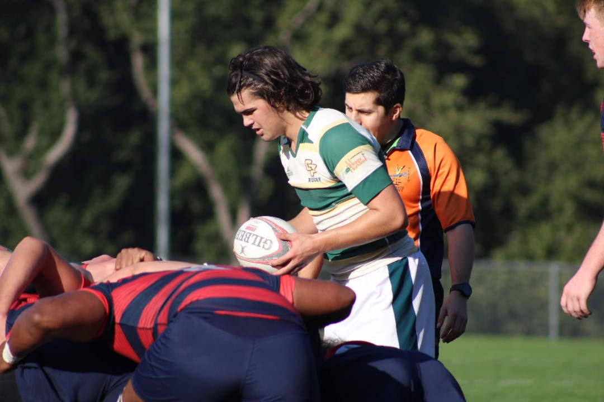
Sophomore scrum-half Frank Lucey gets into his position as Cal Poly prepares to win possession on a scrum early in the first half against a powerful St. Mary’s forward pack during their Feb. 1 match in Moraga, Calif.
4 / 12
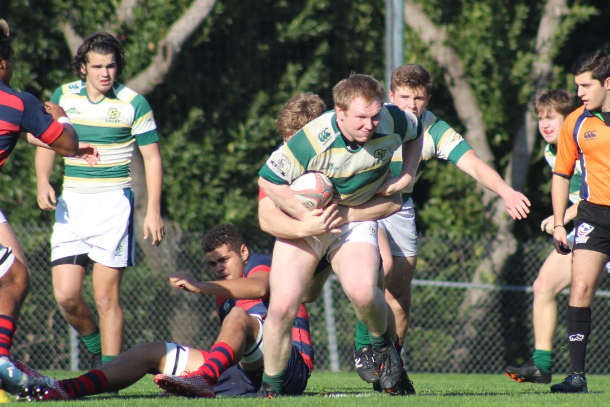
Junior tight-head prop Jasper Stone is wrapped up as his teammates rush to provide support after momentarily breaking free early in the first half against St. Mary’s on Saturday, Feb. 1 in Moraga, Calif. Stone has been an integral part of Cal Poly’s 2019-2020 season after missing all of last year with a shoulder injury.
5 / 12
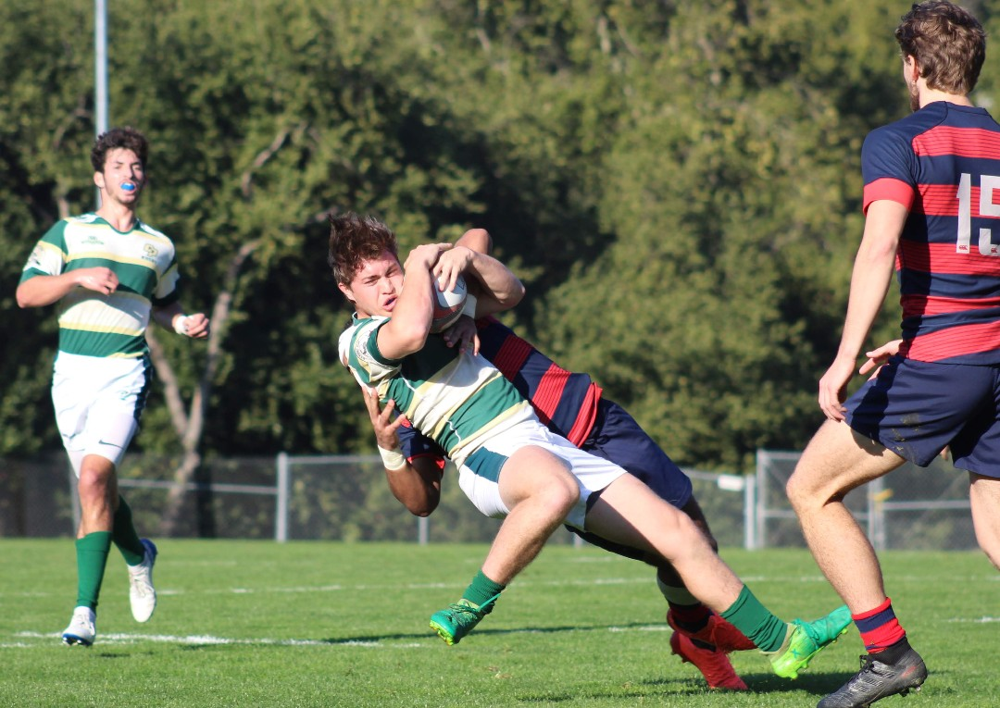
Sophomore wing Mitchell Berger comes down with possession on a Mustangs kickoff to St. Mary’s during their Feb. 1 clash in Moraga, Calif. Cal Poly’s defense largely held St. Mary’s attack in check throughout the first half, going into the halftime break down 19-3.
6 / 12
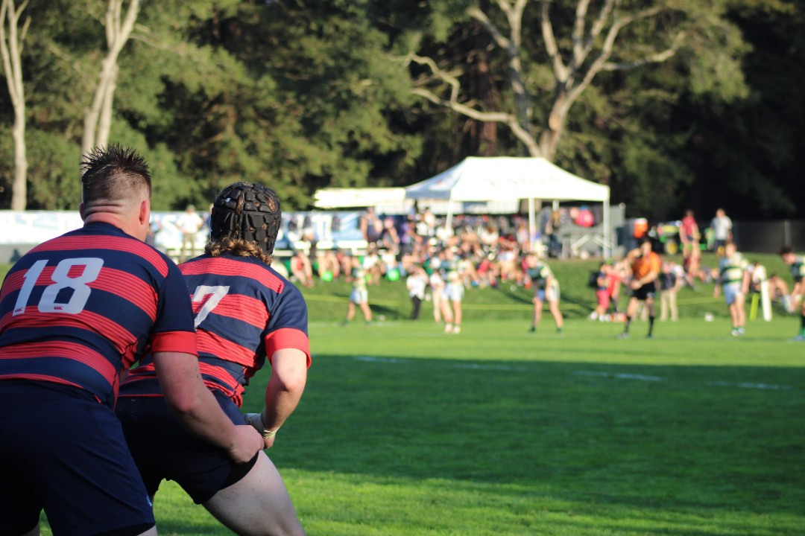
Cal Poly found themselves down 19-3 at halftime after freshman Alex Dominé managed to convert on a penalty kick, filling in for the injured All-Conference fly-half Patrick Madden. The Mustangs kicked off to St. Mary’s to start the second half of their Feb. 1 California Conference showdown in Moraga, Calif.
7 / 12
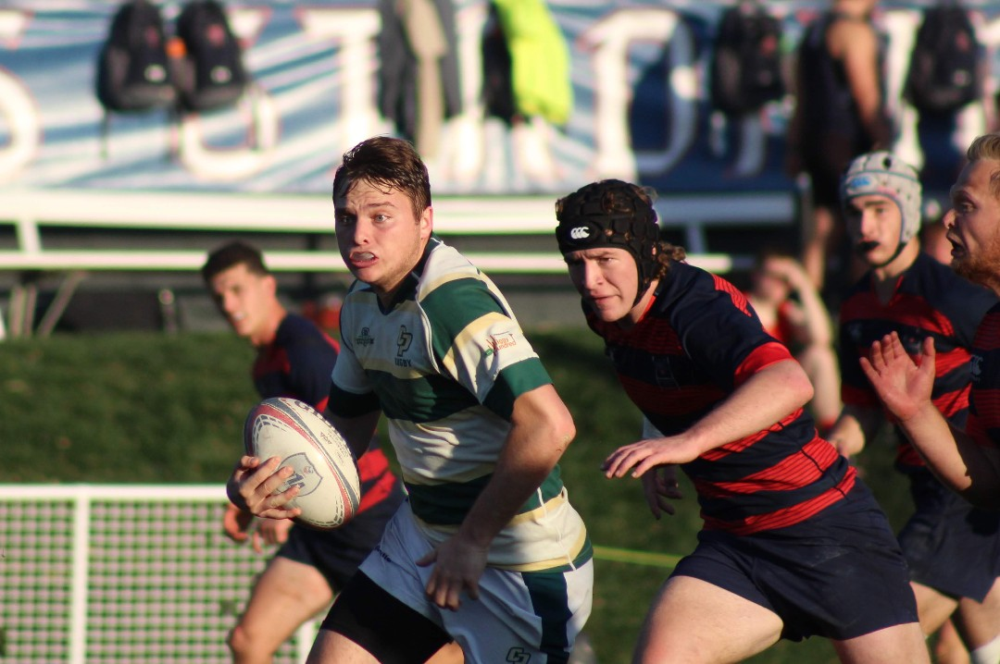
Sophomore center Finn Burke slices through the Gaels defensive line midway through the second half of their Feb. 1 match in Moraga, Calif. His run was one of a few to make a dent in a disciplined St. Mary’s defense, with all but one of those opportunities failing to result in a try.
8 / 12
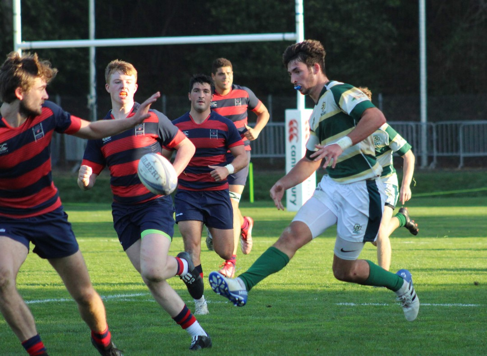
Standout freshman fullback Alex Dominé — who was contained for much of the day by St. Mary’s — kicks possession beyond the waiting Gaels defense after breaking free on a kick return Saturday, Feb. 1 in Moraga, Calif. The Mustangs emptied the offensive toolbox in their attempt to chip away at the overwhelming St. Mary’s lead, which was 41-3 late in the second half.
9 / 12
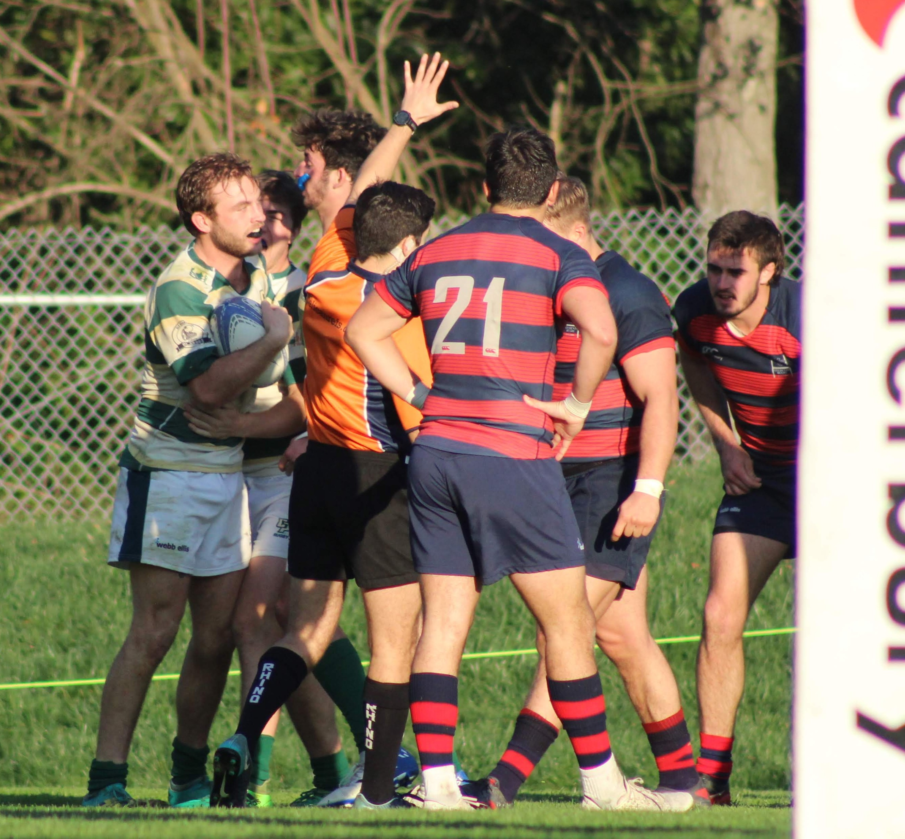
Junior flanker Kyle Hegarty is met by teammates Mitchell Berger (left) and Alex Dominé (center right) after managing to put down the first try of the match for the Mustangs on Saturday, Feb. 1 in Moraga, Calif. Hegarty’s try closed the gap to 41-10 late in the second half.
10 / 12
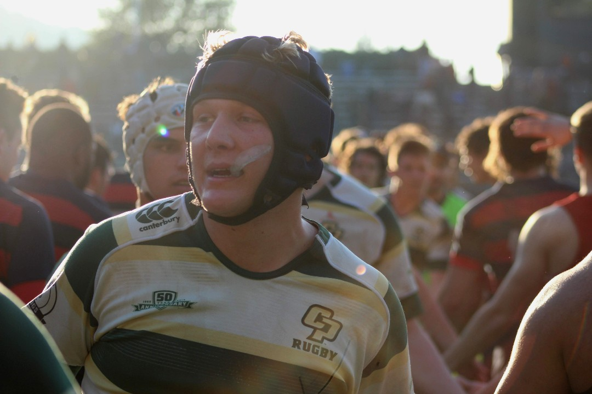
Junior center Ryan Dowgiewicz makes his way through the extended arms of St. Mary’s players after their 46-10 defeat to the Gaels, Saturday, Feb. 1 in Moraga, Calif. The No. 4 Gaels improved to 4-0 on the season while the Mustangs dropped to 0-3 with five matches remaining on their schedule.
11 / 12
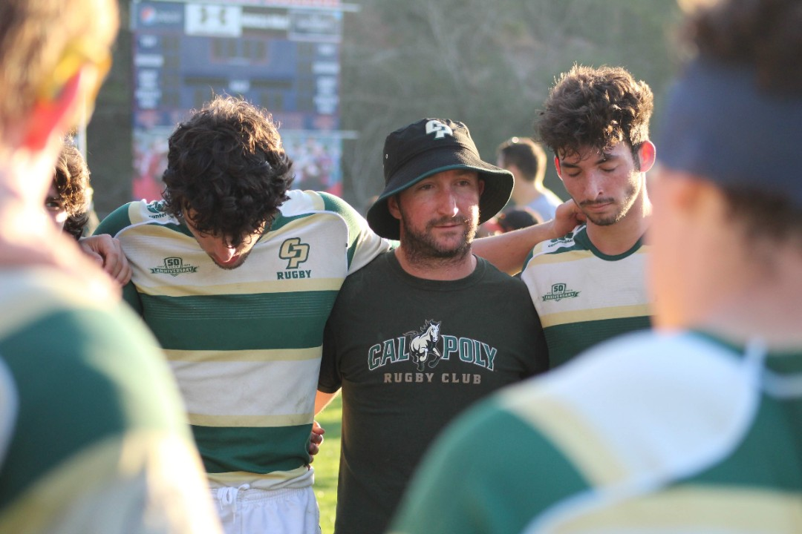
Flanked by sophomore lock Teddy Snyder (left) and freshman fullback Alex Dominé (right), fifth-year Mustangs head coach James Tesoriero gives a post-game talk as players form a circle after their 46-10 defeat to St. Mary’s on Saturday, Feb. 1 in Moraga, Calif. “I thought it was a reasonable performance by our team against one of the best collegiate programs in the country,” head coach James Tesoriero said. “When you concede 46 points it may seem like a poor defensive performance, but against a very powerful SMC attack I thought we contained them well for most of the game.”
12 / 12
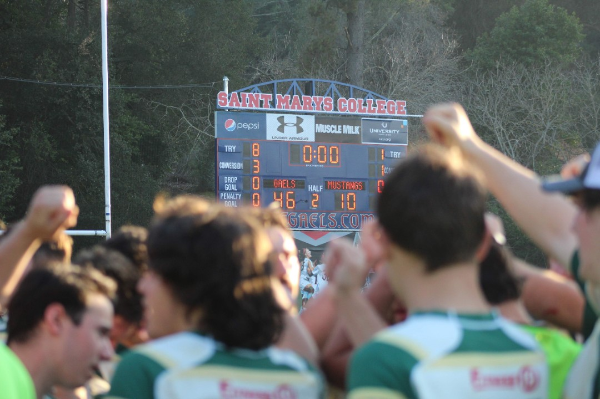
Mustangs players and coaches come together to get one last “break” following their 46-10 defeat to No. 4 St. Mary’s on Saturday, Feb. 1 in Moraga, Calif. The loss meant that Cal Poly remained winless through their 2020 campaign, but, after playing three-straight ranked opponents to start, the Mustangs remained optimistic that the season was not quite over yet.
❮
❯